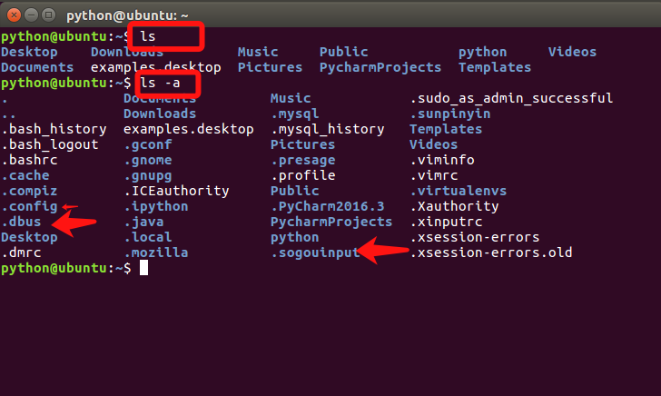
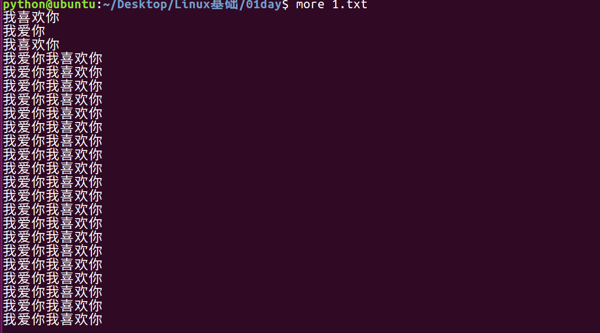

1.文件管理
<1>查看文件信息：ls
ls是英文单词list的简写，其功能为列出目录的内容，是用户最常用的命令之一，它类似于DOS下的dir命令。
Linux文件或者目录名称最长可以有265个字符，“.”代表当前目录，“..”代表上一级目录，以“.”开头的文件为隐藏文件，需要用 -a 参数才能显示。
ls常用参数：
参数 | 含义 |
-a | 显示指定目录下所有子目录与文件，包括隐藏文件 |
-l | 以列表方式显示文件的详细信息 |
-h | 配合 -l 以人性化的方式显示文件大小 |

_files/Image [1].png)
_files/Image [2].png)
_files/Image [3].png)
图中列出的信息含义如下图所示：
_files/Image [4].png)
与DOS下的文件操作类似，在Unix/Linux系统中，也同样允许使用特殊字符来同时引用多个文件名，这些特殊字符被称为通配符。
通配符 | 含义 |
* | 文件代表文件名中所有字符 |
ls te* | 查找以te开头的文件 |
ls *html | 查找结尾为html的文件 |
？ | 代表文件名中任意一个字符 |
ls ?.c | 只找第一个字符任意，后缀为.c的文件 |
ls a.? | 只找只有3个字符，前2字符为a.，最后一个字符任意的文件 |
[] | [”和“]”将字符组括起来，表示可以匹配字符组中的任意一个。“-”用于表示字符范围。 |
[abc] | 匹配a、b、c中的任意一个 |
[a-f] | 匹配从a到f范围内的的任意一个字符 |
ls [a-f]* | 找到从a到f范围内的的任意一个字符开头的文件 |
ls a-f | 查找文件名为a-f的文件,当“-”处于方括号之外失去通配符的作用 |
\ | 如果要使通配符作为普通字符使用，可以在其前面加上转义字符。“?”和“*”处于方括号内时不用使用转义字符就失去通配符的作用。 |
ls \*a | 查找文件名为*a的文件 |
<2>输出重定向命令：>
Linux允许将命令执行结果重定向到一个文件，本应显示在终端上的内容保存到指定文件中。
如：ls > test.txt ( test.txt 如果不存在，则创建，存在则覆盖其内容 )
_files/Image [5].png)
注意： >输出重定向会覆盖原来的内容，>>输出重定向则会追加到文件的尾部。
<3>分屏显示：more
查看内容时，在信息过长无法在一屏上显示时，会出现快速滚屏，使得用户无法看清文件的内容，此时可以使用more命令，每次只显示一页，按下空格键可以显示下一页，按下q键退出显示，按下h键可以获取帮助。

_files/Image [6].png) <4>管道：|
<4>管道：|
管道：一个命令的输出可以通过管道做为另一个命令的输入。
管道我们可以理解现实生活中的管子，管子的一头塞东西进去，另一头取出来，这里“ | ”的左右分为两端，左端塞东西(写)，右端取东西(读)。
_files/Image [7].png)
<5>清屏：clear
clear作用为清除终端上的显示(类似于DOS的cls清屏功能)，也可使用快捷键：Ctrl + l ( “l” 为字母 )。
<6>切换工作目录： cd
在使用Unix/Linux的时候，经常需要更换工作目录。cd命令可以帮助用户切换工作目录。Linux所有的目录和文件名大小写敏感
cd后面可跟绝对路径，也可以跟相对路径。如果省略目录，则默认切换到当前用户的主目录。
命令 | 含义 |
cd | 切换到当前用户的主目录(/home/用户目录)，用户登陆的时候，默认的目录就是用户的主目录。 |
cd ~ | 切换到当前用户的主目录(/home/用户目录) |
cd . | 切换到当前目录 |
cd .. | 切换到上级目录 |
cd - | 可进入上次所在的目录 |
_files/Image [8].png)
注意：
- 如果路径是从根路径开始的，则路径的前面需要加上 “ / ”，如 “ /mnt ”，通常进入某个目录里的文件夹，前面不用加 “ / ”。
<7>显示当前路径：pwd
使用pwd命令可以显示当前的工作目录，该命令很简单，直接输入pwd即可，后面不带参数。_files/Image [9].png)
<8>创建目录：mkdir
通过mkdir命令可以创建一个新的目录。参数-p可递归创建目录。
需要注意的是新建目录的名称不能与当前目录中已有的目录或文件同名，并且目录创建者必须对当前目录具有写权限。
_files/Image [10].png)
扩展：
绝对路径和相对路径
- 相对路径 在输入路径时，最前面不是 / 或者 ~，表示相对 当前目录 所在的目录位置
- 绝对路径 在输入路径时，最前面是 / 或者 ~，表示从 根目录/家目录 开始的具体目录位置
创建文件：touch
查看历史命令：history
查看文件内容：cat
编辑文件：gedit
计算机中文件大小的表示方式（科普）
_files/Image [11].png)
作业：
1、在你的桌面下新建01文件夹，在01文件夹下 在新建一个01.txt文件，在并01.txt文件输入一些内容。并且查看它。并把01.txt重定向到03.txt里面。然后进行新建02文件夹
2、在桌面上创建test目录，在里面创建aa bb cc三个文件夹，在aa里创建hello文件，在bb里创建world文件夹，在cc里创建itcast.py
3、tldr安装、搜狗输入法安装、sublime安装
4、简书账号注册、Linux基本命令
5、英语单词